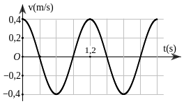
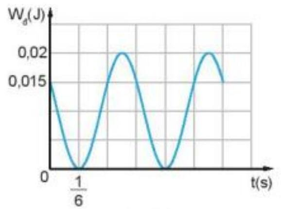
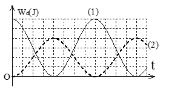
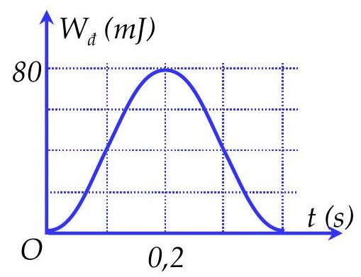

Một vật có khối lượng 2 kg dao động điều hòa có đồ thị vận tốc theo thời gian như hình vẽ. Động năng cực đại của vật trong quá trình dao động bằng

Hai vật dao động điều hòa có động năng biến thiên theo thời gian như đồ thị như hình vẽ bên. Tỉ số cơ năng của vật (1) so với vật (2) bằng
Một vật khối lượng 400 g thực hiện dao động điều hòa. Đồ thị bên mô tả động năng Wđ vật theo thời gian t. Lấy $\pi^{2}=10$. Biên độ dao động của vật làNhập thông tin để hệ thống ghi nhận kết quả.